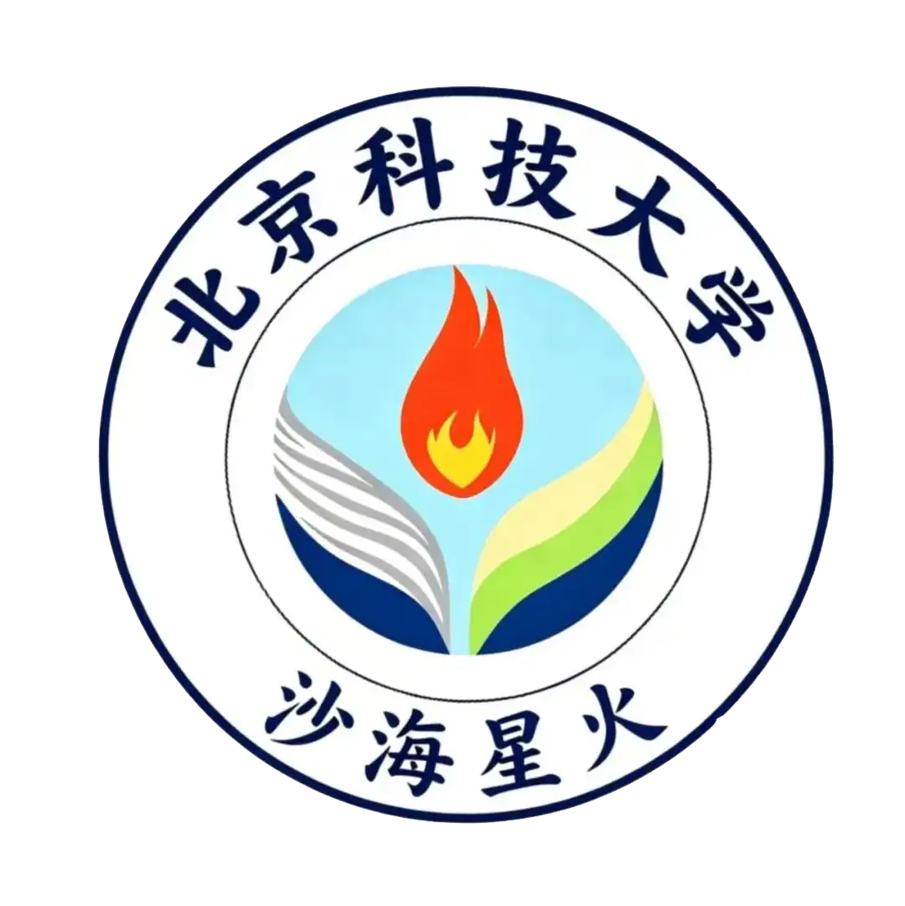

沙海星火
来自北京科技大学 · 赴宁夏中卫
路慧敏
曾获北京科技大学优秀本科生导师、十佳导师提名奖、北京市本科生毕业设计优秀指导教师等荣誉。很高兴成为大家的指导老师，希望同学们能在两周的社会实践中学到课本外的知识，预祝实践顺利！
李宝林
曾获优秀共青团干部、三好学生、社会实践先进个人等荣誉称号。竞赛方面获全国大学生数学建模竞赛北京赛区一等奖、中国大学生计算机设计大赛北京赛区一等奖、首都挑战杯一等奖等多项省部级奖项。今年是我参与社会实践的第三年，预祝大家社会实践成功顺利，一起加油！

殷楷棋
"我是沙海星火实践队的队长，一个超级热情乐观、热衷教学的学生，主要负责统筹教学任务和音乐方面课程的教学。授人以鱼，不如授人以渔。"

白云青
"核心工作是对接各方、洽谈沟通，搭建对外交流与合作的桥梁。我性格开朗外向，后续会尽力协调各类资源，配合团队高效推进各项实践任务。"

肖臻峰
"主要职责是为社会实践写文案宣传，将实践过程以文字的方式记录下来，我性格较为乐观。"

郭塞璇
"核心工作是撰写各类宣传文稿，为本次社会实践产出配套文字内容。我乐于接收各类新颖想法，会结合团队实践内容打磨优质文案，助力宣传工作落地。"

张俊豪
"主要负责视频剪辑，能够独立完成视频剪辑、调色与后期包装。我性格随和乐观，擅长沟通协作，会积极配合团队需求修改优化视频内容。"

余涛
"每当团队开展实践活动，我都会全程随行拍摄，完整记录下我们一路走来的点点滴滴。希望透过镜头捕捉珍贵画面，留存所有闪光时刻。"

高炳杰
"负责公众号日常推文排版、内容策划与定时推送，同时统筹短视频账号运营。后续宣传相关的素材需求大家可以随时对接，我会配合团队做好对外展示。"

魏文彬
"线上新媒体这块由我负责，公众号图文编辑更新、短视频账号的内容运营都是我的工作。希望能在后续工作中和大家和谐相处，共创美好回忆。"

蔡林泽
"主要负责编程相关工作，本人开朗乐观、性格外向。我会认真落实好每一项工作，和大家一起创造一段难忘的回忆。"

李学伟
"我十分热爱编程，平时热衷于钻研代码逻辑与功能实现，乐于主动和大家交流思路。遇到问题愿意主动沟通探讨，期待和大家相互学习、共同进步。"